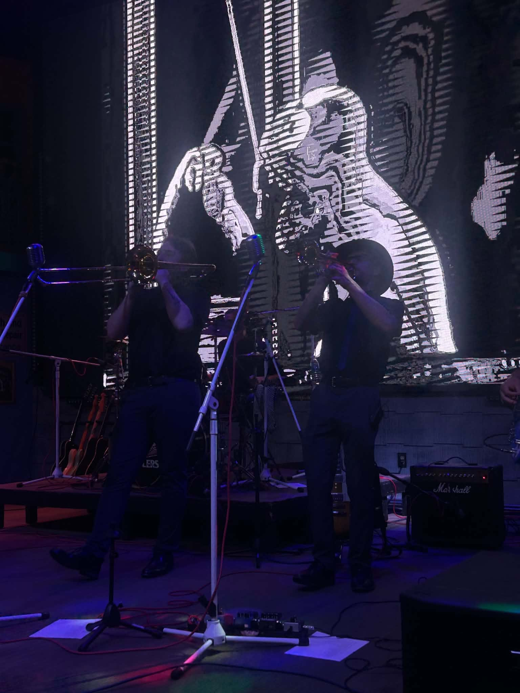
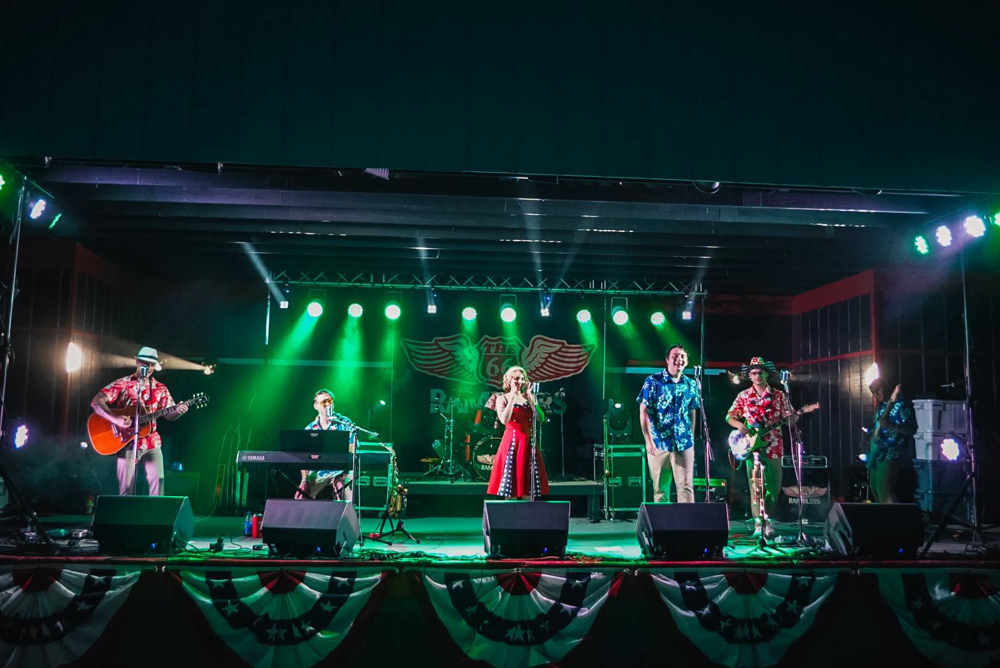

Music, audio & video
Music.
Audio.
Video.
A portfolio of live performances and creative work shaped by collaboration.
View selected videos
About Colin
I’m Colin DeFord. My focus is live sound, with a growing interest in sound design. I enjoy being present in the moment and sharing those experiences through audio and video.
Selected moments
On stage & beyond.
Video collection
Take a
closer look.
Explore selected videos featuring music and performance.
View videos